iOS（iPhone OS）
iOS，经历了十年的发展，现在已经发展为移动操作系统家族中不可或缺的一员。从当初iPhone Runs OS X到现在最新的iOS 10，乔帮主改变了世界，改变了我们对移动设备的看法。说实话，在iOS发展到现在的这十年间，曾经无比辉煌的功能机厂商一个接着一个倒在了移动浪潮之中，就算是有微软这个好爹的Windows phone也即将与我们告别。
先不说这是否合情合理，但就从市场占有率上来说，Android和iOS两家已经把整个移动设备的操作系统占了绝大部分，留给后来者的份额微乎其微，相当于没有。但是就算这样，当初的Windows phone最高全球市场占有率也没达到3%，黑莓更不用说了，在全球每一个国家，黑莓的占有率都不足0.5%，翻身是基本不可能的了。
通过Android和iOS这几年的发展，双方互相吸收优点，互相成长。现在基本上已经不可能有任何一个操作系统能够达到这种高度。前段时间，Android全球设备拥有量正式超过Windows，成为全球用户量最大的操作系统，可见当前的移动操作系统是多么受人们欢迎。
在这十年中，iOS不断的向前发展，不断的推陈出新。App Store 2.0已经把与开发者原先三七分成的比例改成了1.5：8.5，这对我们开发者来说是一个巨大的好处。iOS的生态环境正在变得越来越好，用户的操作习惯这几年被逐渐的固化下来，这对我们来说是一个好消息，因为这不会像iPhone刚推出那会儿，所有厂商并且好包括大部分消费者都在嘲笑iPhone的操作方式，但是iOS和iPhone相辅相成发展到今天，已经给世人一份最好的答卷。苹果在完成这份答卷的过程中，苹果公司做出了很多不为人知的努力，相关内容可以参考这篇文章。
接下来，我们来看看在iOS发展的这十年中都经历了哪些变化
iPhone Runs OS X——革命的开始
2007年1月的MacWorld大会上乔布斯发布了苹果的第一款手机，当时iOS系统还没有一个正式的名称，只是被叫做iPhone Runs OS X。全世界的同行都觉得这是一个笑话，一个不能更换铃声和壁纸，不能运行后台程序，甚至根本没有第三方应用的手机，怎么好意思被称作“智能手机”？
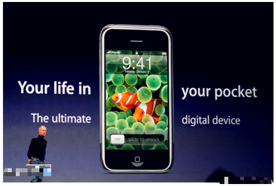
但一向擅长创新的苹果公司还是让我们见到了许多新奇的玩法，像3.5英寸480*320分辨率的大屏幕、多点触控的交互方式以及从未见过的简洁UI，都颠覆了人们对于传统意义上手机的认识。尽管iPhone的出现起初只是为了挽救在当时急剧萎缩的iPod市场，但苹果也许自己都没有想到，这一部手机将会引起巨大的行业革命，颠覆整个市场的格局。
iPhone OS 2.0——生态坏境初建成
在iPhone OS诞生初期，还没有应用商店可供下载第三方的应用程序。乔布斯在当时鼓励开发者开发网页应用而不是原生应用，导致在当时应用程序质量不高，功能有限。直到几个月后，苹果改变了主意，并在2008年3月发布了第一款iOS软件开发包。并在当年7月推出App Store，这是iOS历史上的一个重要里程碑，它的出现开启了iOS和整个移动应用时代。
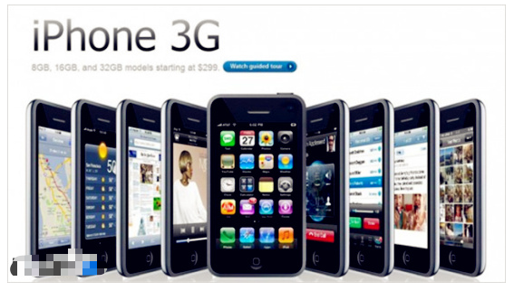
收入三七分成的制度和良好的生态环境迅速吸引了大量开发者。很快，iPhone几乎变成了一款“万能”的手机：量角器，水平仪，游戏机，其中还不乏一些相当具有逼格的“喝啤酒”，“吹蜡烛”等游戏。并且在此后的几年中苹果不停地完善App Store的功能。直到现在，App Store里的应用数量都是苹果自己最值得骄傲的地方之一。
iPhone OS 3.0——再度完善
iPhone OS 3.0更像是填补前两代系统的空白。例如键盘的横向模式、新邮件和短信的推送通知、彩信、数字杂志，以及最初的语音控制功能，能够帮助用户寻找/播放音乐以及调用联系人，还有最重要的复制粘贴功能。实际上在前两代系统中，人们在用惯比较成熟的塞班系统后，iPhone OS系统还是存在诸多差异或者不便，尽管在当时人们看来iPhone提供了一种新奇的使用体验。
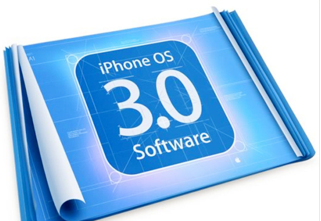
但在3.0版本中对着些缺失的功能进行补齐之后，iPhone的实用性也大大增强了。随后，在2010年4月，苹果发布了iOS 3.2。iOS 3.2是一次划时代的演变，因为这是第一款针对“大屏”iPad平板优化的移动系统。
iOS4——高颜值模式开启
iPhone OS操作系统在这一代正式更名为iOS。iOS 4是前四代iOS系统中外观改善最大的一代操作系统，乔布斯及其设计团队为界面上的图标设计了复杂的光影效果，让让界面看上去更加漂亮。
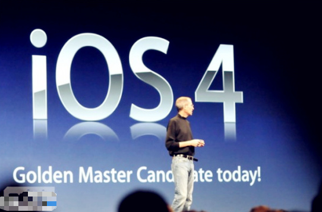
Game Center是我们看到的第一个变化很大的例子。它的界面颜色丰富，绿色、酒红色、黄色等，上下底部则是类实木设计。正是在这一版系统中，“skeuomorphic（仿真拟物风格）”开始完善起来。不仅如此，界面可切换壁纸终于被带进了iOS。苹果还在iOS 4中加入了文件夹功能，全新亚麻质地背景的文件夹中，用户可以存放相关应用内容。
甚至还可把这个图标放入底部的Dock，不失为一个非常实用的功能。此外还带来全新的多任务处理新功能。通过双击Home键，用户会在屏幕底部看到一排常用应用程序列表。有了它，用户无需翻页，便能快速地在应用间切换。当然除了操作系统之外，与iOS4同期的iPhone4也是前所未有的漂亮，首次引入了前后双玻璃的设计，厚度也仅有9.2mm，创下了全球最薄智能手机的记录。
iPhone4被认为是乔布斯最经典的杰作之一，也是乔帮主临终前最后一部杰作。至少在大众审美的角度，iPhone4在当初的市场上当之无愧的成为颜值最高的手机，供不应求的现象屡见不鲜。
iOS5——你好，Siri
界面与iOS 4基本相同的iOS 5，为苹果用户带来了一项非常重要的新功能：Siri。尽管最初被批功能有限，但这是苹果第一次尝试让用户以不同的方式使用自己的iOS设备，并将Siri打造成为iOS中的个人助理服务，从此以后，调戏Siri就成了iPhone 4S用户的一大乐趣。
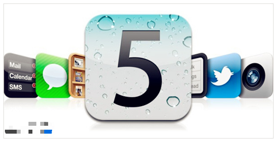
仿真拟物设计在iOS 5中可谓达到了极致，苹果的软件界面中大量模仿现实世界中的实物纹理，例如，黄色纸张背景的“备忘录”和亚麻纹理的“提醒”应用。通知中心也在此版本中被引入了，用户从此不再需要从icon的角标中寻找通知了。iOS5时代还有一项重大的改变：App Store终于支持人民币支付了。
在App Store必须使用VISA和万事达信用卡的时候，越狱成了很多用户安装收费软件的唯一办法。而这一状况终于在iOS5时代得到改善，App Store支持网银转账充值了，我不知道有多少人为此踏上了正版App之路，但笔者就是其中之一。
iOS6——扭曲的世界
在这一版本中，苹果采用了全新设计的地图软件，放弃已经合作了多个版本的谷歌地图。地图元素基于矢量，即使你放大画面，图形和文字的细节仍然存在。3D模式可以让你用倾斜和旋转的角度查看一个区域。然而这一全新的地图软件并未受到广大用户的喜爱，不少用户抱怨新的地图软件是iPhone5上最大的倒退。
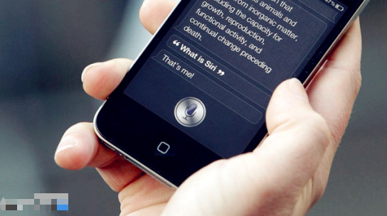
其地图数据并不完善，还存在大量图形扭曲现象，可以说是“一致差评”。然而在中国地区得到的评价则大不相同，由于中国地区的地图数据由高德提供，不少地方要比谷歌做得更好。除了地图之外，苹果也添加了诸多功能，Passbook，全景相机，蜂窝数据状态下的FaceTime，丢失模式等等都在iOS6中加入。
iOS7——扁平化or拟物化？
乔纳森带领的设计团队这一次彻头彻尾重新设计了iOS系统。如果说这是iOS系统诞生以来变化最大的一次那绝对不为过。这一次更新引发了人们对扁平和拟物两种设计风格的强烈探讨。它采用全新的图标界面设计，总计有上百项改动，其中包括控制中心、通知中心、多任务处理能力等等。
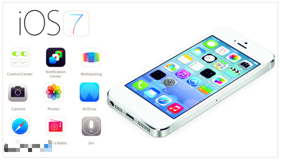
除了UI的巨大变化之外，笔者认为iOS7也不乏很多非常实用的功能，像控制中心的出现很大程度上简化了iOS系统的操作繁杂之处，我们不必为了开一个Wi-Fi而进入设置打开开关了。在这个版本中还添加了中国人较为喜爱的九宫格输入法，用户也因此少了一个越狱的理由。
iOS8——强大的生态环境
经过了iOS7这样翻天覆地的变化，很多用户认为iOS8的改动相对而言就小了许多。但事实上笔者认为iOS8最出彩的地方不在于这个系统本身，而是苹果对旗下所有平台进行了整合，使其生态环境愈发完善。Continuity功能的加入使苹果旗下的产品联系更紧密了，利用iOS 8中新增的Continuity，可以继续在另一台iOS设备上未做完的事情了。
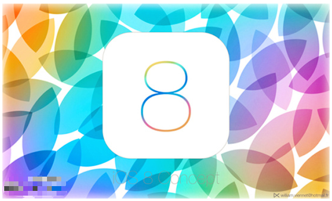
比如写了一半的电子邮件或读了一半的网页等等。只要你的Mac或iPad与iPhone使用的是同一个WiFi网络，你就可以直接在Mac或iPad上接电话。这样的设计很大程度上加大了用户对苹果产品的依赖，但不得不说确实能够加强用户体验。在这一版本中苹果还为开发者带来了一些新玩具，新的编程语言Swift和Metal渲染接口，还开放了Touch ID的API，开发者还能编写额外的通知中心控件，总而言之iOS8比以往的iOS系统要更开放了。联想起在当年Symbian系统对开发者严格的约束，这样的待遇确实是非常吸引开发者的。
iOS9——大幅降低的升级门槛
在WWDC2015中，苹果公布了最新一代的iOS9系统，除了功能上的各种升级，最令人意外的是苹果这次把iOS 9的升级门槛控制在与上一代的iOS8相同，支持的升级设备与iOS 8相同，也就是说连iPhone4s也可以取得升级，iPhone 4s作为历史最受欢迎的iPhone手机之一，这无疑是一个天大的好消息。
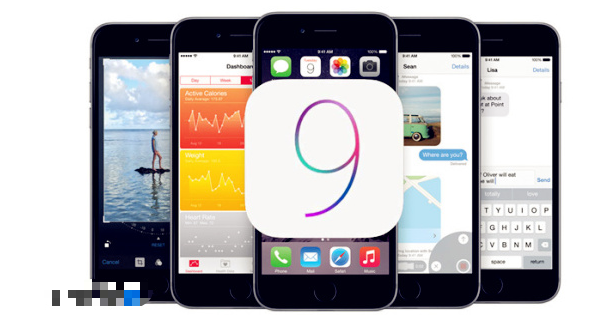
与此同时iPad 2平板和第五代iPod Touch相同可以享受iOS 9升级服务。同时苹果也大幅度降低了iOS 9升级安装所需的存储空间，从原来的4.6GB下降到现在的1.3GB，对于广大16GB内存空间的iPhone用户来说又少了一个不升级的理由了。在系统上的一些功能完善也很有看点，原生地图支持公交查询，新的News新闻软件，iPad的分屏模式等等，都是一些比较实用的功能。最重要的当然是3D Touch了！随着iOS9一同发布的还有iPhone 6S & Plus，新设备的推出也就是意味着新的交互方式产生。3D Touch直接把以往横向上的二维操作变为了横向和纵向上的三维操作，大大加强了用户和设备的交互性。
iOS10——迄今为止最好用的iOS系统
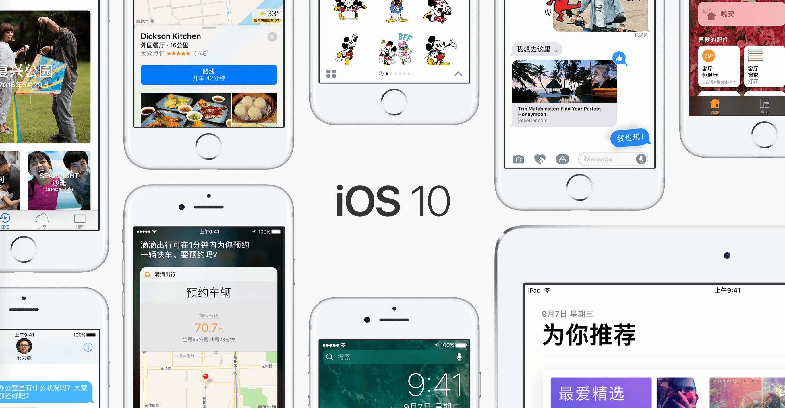
北京时间2016年6月14日凌晨一点，苹果开发者大会WWDC2016在旧金山召开，苹果系统iOS10正式亮相，苹果为iOS 10带来了十大项更新。关于iOS10是自iOS由拟物化风格变为扁平化风格以来界面变化最大的一次系统升级，新的通知中心和新的推送界面设计，融入了卡片式风格，更加的贴合了3D Touch的操作，给用户一种直观上的反馈，同时在这一次的系统版本更新中，苹果把文件管理系统换成了更为先进的APFS，让小存储容量设备空闲出了几个G空间，同时也大大的减小了零碎文件的整理，不得不说这才是最为iOS 10中最激动人心的升级！
iOS 11——带来的众多新功能为 iPad 注入了强大新动力,也让 iPhone 进一步成为你日常必备。
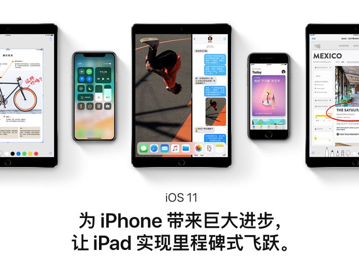
iOS11中，苹果增加了对AR增强现实的支持，为开发者提供ARKit。该功能使用iPhone传感器来确定平面，照明，尺度估计等，用户可以加入不同的物品， AR应用能够实现更加真实的效果，光影效果更出色。苹果表示，ARKit将使iOS成为世界上最大的AR平台。iOS 11采用HEVC视频压缩标准和HEIF照片压缩标准，它们可以在保留视频和照片高质量的同时，有效地缩小这些多媒体文件的大小。并且还重点优化了相机的功能，包括样张质量、低光拍摄、光学稳定和HDR模式等方面的改善。更新了控制界面，并加入了更多选项。新的控制中心变为了一整页，所有功能都集中到了这一页，包括锁屏、3D Touch等。在锁屏界面，iOS 11更加重视一体化，用户可以通过滑动实现所有的事情。
以上内容部分来自网络